Дороги удобно проектировать выполняя условия:
-на одном перекрестке пересекаются два прямолинейных направления. Остальные, при надобности, уводятся в сторону;
-движение вперед осуществляется по правой стороне дороги;
-встречное движение осуществляется по левой стороне дороги;
-на перекрестках осуществляется поворот направо;
-между перекрестками располагается разворот;
-нижняя граница моста, проходящего сверху над дорогой находится на высоте не меньше 4[m], так как высота стен 1 этажа жилого дома равна 3[m];
-ортогональное растояние между центрами ближайших окружностей, в которые вписаны окты, равно 12[km];
-диаметр окружностей, в которые вписаны
окты, равен 6[km].
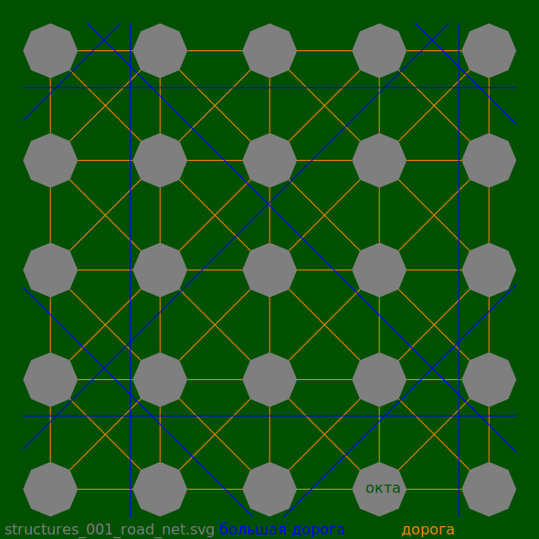
Представленая выше схема, в реальном масштабе, позволяет располагать прямолинейные дороги выполняя условия удобного проектирования.
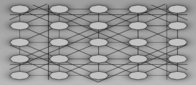

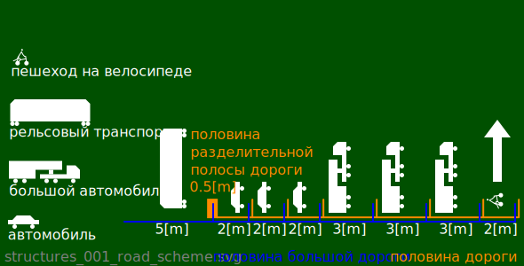
На схеме выше, изображена правая, по ходу движения, часть дороги.
Перекрестки и развороты удобно проектировать в виде мостов. Перед мостом расширяется нижняя дорога для установки столбов. В представленых ниже моделях использованы столбы диаметром 1[m].
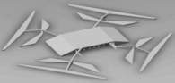
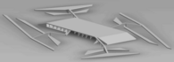
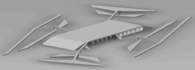
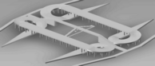
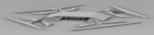
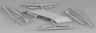
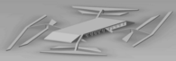
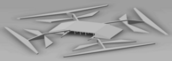
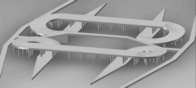